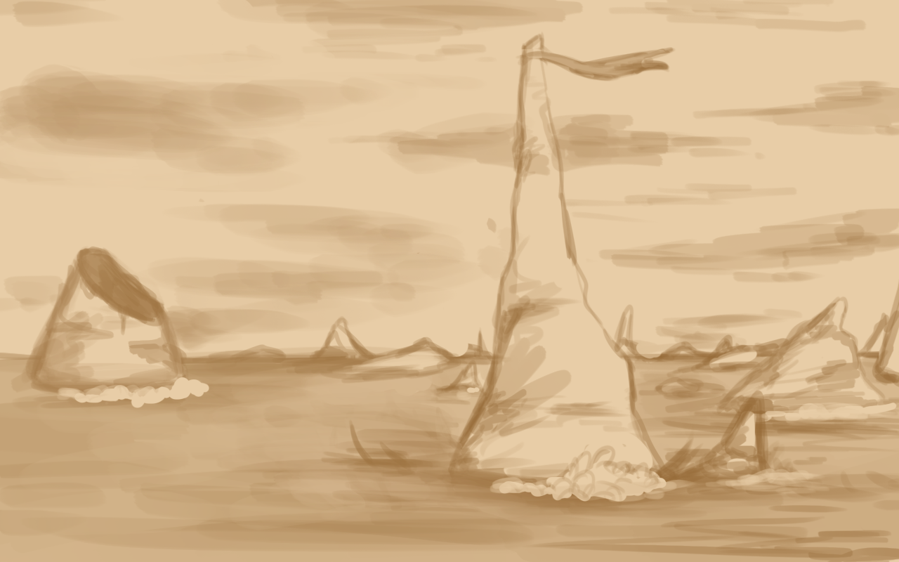

We are at the Sea of fangs. Finding the landmark for the entry of the charted route turned out to be easy. Navigator Nyxie steered us true and we found the large marked cliff ominously named "The wailer". Apparently strong enough wind will cause it to howl.
The sea is well named, white fangs and spines regularly rise from beneath the waves, some as tall forlorn sentinels like The wailer, worn down by wind and wave. Some barely above sea-level, glimpsed only briefly like the teeth lurking and waiting to gnash the hull of a careless ship.
As I watch the odd oceanscape stretch into the horizon, particularly thickly in the south, I wonder idly what kind of calamity caused a place like this to come to be.
The crew is now on high alert, we are pulling double-shifts to make sure we are ready to respond to any contingency with speed.
